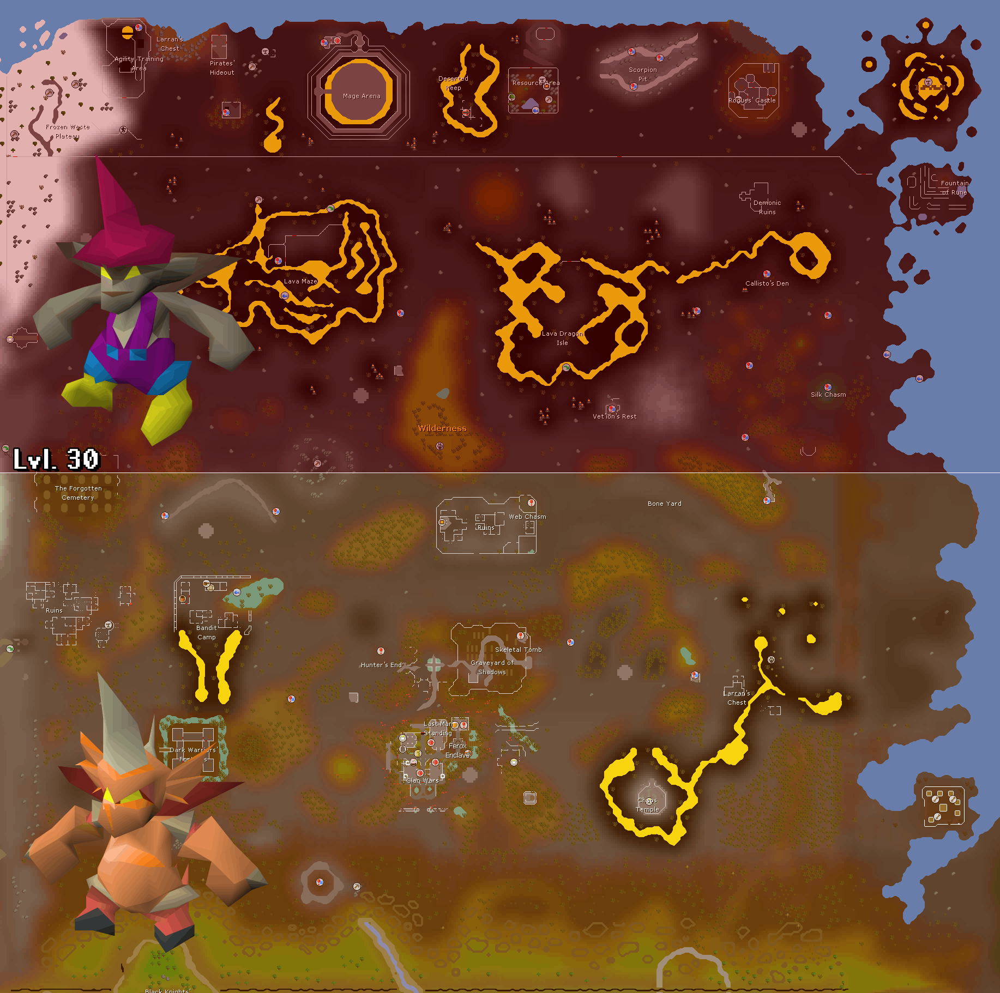
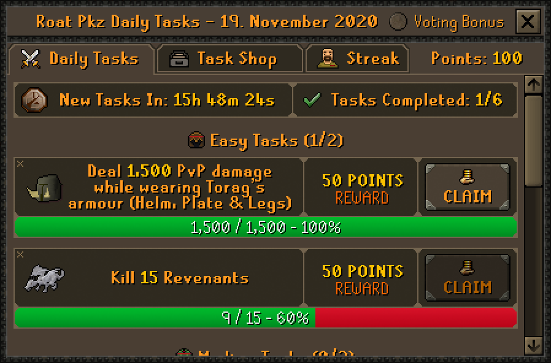
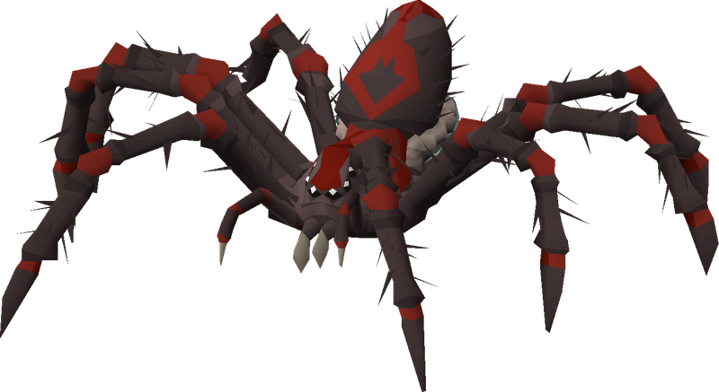
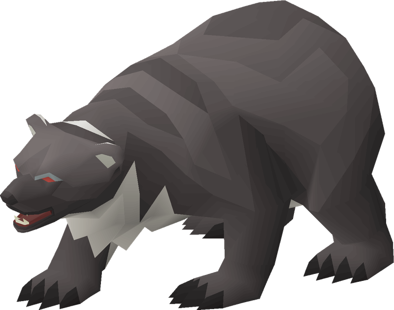
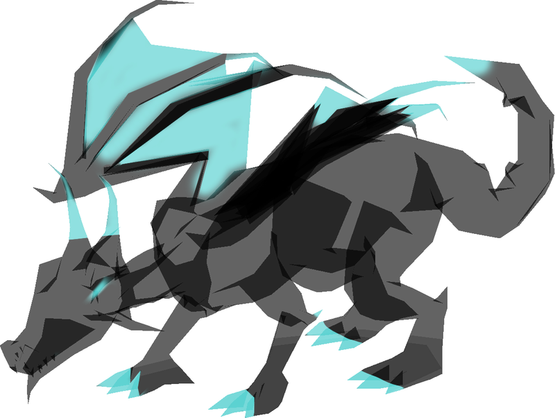
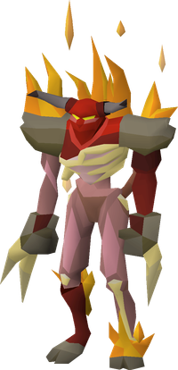
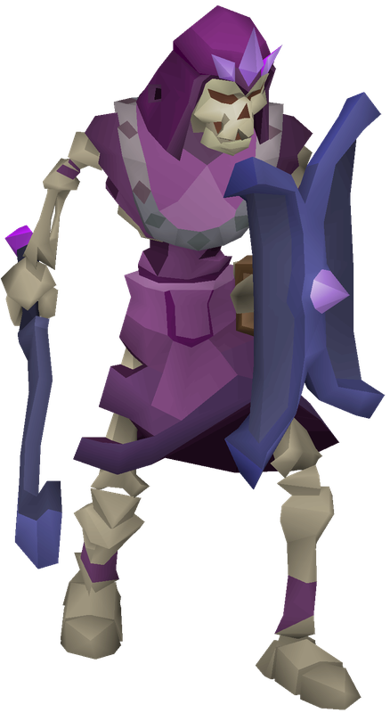
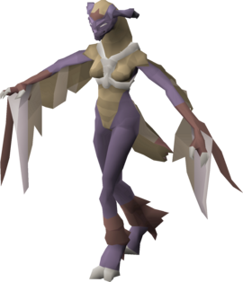
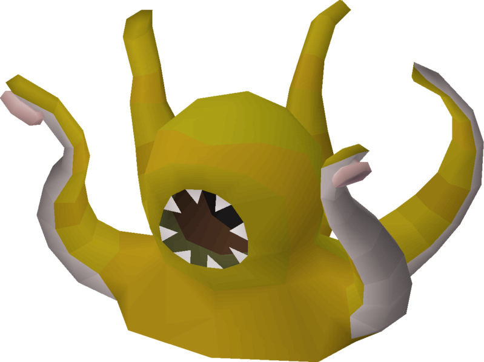
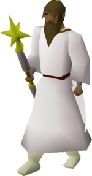

RISK-AWARE PKP PROGRESSION
Roat Pkz Money Making Guide: Best PKP Methods
Compare current Roat Pkz money makers by requirements, Wilderness exposure, Donator access, attention level and realistic net-profit assumptions.
The highest Wiki estimate is not automatically the best method for your account. Deaths, interruptions, scroll costs and unsold drops can change the result.
QUICK ANSWER
What are the best ways to make money in Roat Pkz?
Match the method to the player. New or low-budget accounts can use Daily Tasks, safe-zone Crystal Implings and short low-cost tests. Low-attention players can test Kraken, while remembering its money guide is marked obsolete. Established PvMers can compare Tormented Demons and Nex with their real gear. Experienced Wilderness players can test Venenatis, Callisto or Vet'ion with a replacement budget. Royal Donators gain access to Royal variants and Royal Revenants, but the zone remains PvP-enabled. High-Hunter players who accept Wilderness exposure can track Lucky and Dragon Implings.
READ THE RATE CORRECTLY
Wiki estimates are models, not completed sales
The official overview uses trade values and explicitly warns that actual rates differ. Detailed guides also recalculate from changing item values, assumed kills per hour and method inputs. Equipment, maximum stats, scrolls, vote bonuses, Slayer tasks, Donator benefits, interruptions, deaths and rare-drop variance can all move the result.
- Gross expected value
- Estimated average value of all drops before costs.
- Operating cost
- Supplies, charges, scrolls, fees and consumables.
- Risk-adjusted result
- Gross value minus operating costs and expected death losses.
- Realized profit
- What you actually receive after items are sold.
MATCH YOUR ACCOUNT
Find a practical method
Choose preferences to narrow the guide. The complete comparison and article remain available below.
DEFAULT START
Daily Tasks
Structured objectives with no invented hourly rate. Check each roll before committing gear.
Review Daily TasksSAFE-ZONE OPTION
Crystal Impling
Requires 69 Hunter and appears at ::skilling; loot value is variable.
VERIFY LIVE VALUE
Kraken
Relaxed combat, but the official money guide is obsolete and current economics need testing.
Review KrakenNo exact match. Relax one filter or compare all current methods below.
SOURCE-AWARE COMPARISON
Compare access, risk and estimate quality
Ranges show conflicting official overview and detailed-page figures; they are not profit promises.
| Method | Access | Location | Risk | Intensity | Main requirement | Current estimate status | Best for | Official Wiki estimate |
|---|---|---|---|---|---|---|---|---|
| Venenatis | Public | ::vensingle / ::venmulti | Wilderness | High | Strong 4-item melee | Conflicting official estimates | Experienced Wild PvM | Official Wiki range 133,201–139,215 PKP/h |
| Royal Venenatis | Royal | ::royal | Singles-plus PvP | High | Royal, task, max gear, scrolls | Conflicting official estimates; Royal route | Optimized Royal accounts | Official Wiki range 591,637–639,322 PKP/h |
| Callisto | Public | ::callistosingle / ::callistomulti | Wilderness | High | Ranged setup | Conflicting official estimates | Experienced ranged PvM | Official Wiki range 130,813–136,595 PKP/h |
| Royal Callisto | Royal | ::royal | Singles-plus PvP | High | Royal, task, max gear, scrolls | Conflicting official estimates and 30/45 kills | Royal ranged specialists | Official Wiki range 404,821–415,738 PKP/h |
| Royal Revenants | Royal | Royal Zone top floor | Singles-plus PvP | High | Max range, ether, scrolls | Conflicting official estimates; failed detail lookup | High-throughput Royal play | Official Wiki range 220,398–257,142 PKP/h |
| Tormented Demons | Public route; Royal assumed in detail | ::tormented | Controlled combat | High | Multi-style knowledge and gear | Conflicting official setup assumptions | Established PvM | Official Wiki range 251,573–330,168 PKP/h |
| Vet'ion | Public | ::vetsingle / ::vetmulti | Wilderness | High | 43 Prayer, crush melee | Conflicting official estimates | Prepared melee PvM | Official Wiki range 107,931–112,558 PKP/h |
| Nex | Public / Royal | ::nex, ::nexmulti, ::royal | Wilderness / PvP | High | High-end ranged; solo/team | Conflicting estimate and location sources | Experienced bossers | Official Wiki range 94,801–103,426 PKP/h |
| Kraken | Public | Kraken Cove / instance | Lower combat risk | Low | Optional 200 PKP instance | Legacy Wiki guide | Relaxed live-value testing | Official Wiki range 13,071–18,714 PKP/h |
| Battle Mages | Public | ::battlemage | Single Wilderness | Low combat | Replacement set and escape | Legacy Wiki guide | Low mechanics, high caution | Official Wiki range 12,564–14,299 PKP/h |
| Impling hunting | Public | Skilling zone / Wild 30–56 | Mixed | Medium | 69–89 Hunter, net and jar | No stable hourly estimate | Hunter and exploration | Not published |
| Daily Tasks | Public | ::tasks | Varies by task | Varies | Complete five rolled tasks | No stable hourly estimate; pays points | Repeatable progression | Not published |
LOWER-COMPLEXITY ROUTES
Start with repeatability, not the largest number
Daily Tasks
Five actual objectives plus a completion entry create a clear daily loop. Review the risk of each rolled task.
Plan the task routeCrystal Impling
A safe-zone Hunter option at ::skilling for level 69 Hunter. Competition and variable loot prevent a stable hourly rate.
Kraken
Low combat intensity and an optional private instance, but the official money guide is obsolete. Test current sale value first.
Review the legacy methodBattle Mages
Simple combat does not make the Mage Arena safe. PKers and stale guide values make this a cautious test, not a default beginner route.
Review the riskPUBLIC WILDERNESS BOSSES
High expected value carries interruption and replacement costs
Venenatis
Melee, 26-kill detail assumption and public single/multi routes. Value is concentrated in the Voidwaker gem and other rare drops.
Compare both Venenatis routesCallisto
Ranged, 25-kill detail assumption and public single/multi routes. Deaths and the rare Voidwaker hilt strongly affect short sessions.
Compare both Callisto routesVet'ion
Crush melee, 43 Prayer and a 20-kill detail assumption. Lightning movement and PKer pressure reduce practical uptime.
Review Vet'ion economicsCOMPLEX OR STRUCTURED PVM
Separate encounter difficulty from location risk
Tormented Demons
The public command is documented, while the detailed profit setup assumes Royal rank, max melee, vote bonus and several scrolls. Do not apply its maximum-efficiency value to a learning setup.
See the setup conflictNex
The current boss page places Nex in Wilderness single, multi and Royal locations. Team size changes personal unique rolls; the complete team output is not your personal profit.
Review Nex assumptionsROYAL ACCESS
Royal routes increase capacity, not safety
Royal Venenatis and Callisto use higher kill-rate assumptions, a matching Wilderness Slayer task and four priced hourly scrolls. Royal Revenants assume 200 kills per hour, max range, ether and four scrolls. The official Royal Zone page documents a PvP zone with a 10% PvM damage and accuracy benefit; relevant locations are singles-plus.
Review access separately in the Roat Pkz Donator Ranks guide.
- Royal Venenatis: spider task, max melee, scroll package and 50-kill assumption.
- Royal Callisto: bear task, ranged setup and unresolved 30-versus-45-kill wording.
- Royal Revenants: max range, ether, optional Revenant task and severe PKer interruption risk.
HUNTER ROUTE
Impling hunting trades fixed rates for opportunistic value
Roat Pkz documents one Impling of each type per area, with a respawn within the next 15 minutes and a global message. You need a Magic butterfly net and an Impling jar. Wilderness catches require risk defence off and Bounty Hunter opt-in, so prepare an escape before searching.
| Impling | Hunter | Area | Risk | Value pattern |
|---|---|---|---|---|
| Crystal | 69 | Skilling zone (::skilling) | Safe-zone route | Resources and Skilling Points |
| Dragon | 79 | Wilderness 30–56 | High Wilderness risk | Jewellery, PKP and Bounty Hunter Points |
| Lucky | 89 | Wilderness 30–56 | High Wilderness risk | High-variance weapons, PKP and Bounty Hunter Points |

(opens the full-size map in a new tab)::skilling. Open the map full-size to read its labels.
Practical route
- Bring only the net, jar, supplies and replaceable defensive gear you need.
- Use the global respawn message to avoid aimless exposure.
- Check Wilderness level and teleport limits before crossing the level-30 boundary.
- Bank a successful catch instead of carrying it through another search cycle.
REPEATABLE PROGRESSION
Daily Tasks convert varied play into useful points
::tasks opens the Task Master route.
Six entries appear at the 00:00 server-time reset, but the final entry is the complete-all objective, so there are five actual tasks. The system uses Easy, Medium and Hard tiers with two displayed entries per tier. Completing tasks awards Daily Task Points for temporary, tradeable scrolls.
- One vote grants 20% more Daily Task Points for the next 12 hours.
- Completing all tasks grows the streak; streak protection is a separate Donator-point cost.
- The Daily Tasks page says skips vary by Donator rank, but current rank counts differ from the older task-page wording.
- Double Drops can raise gross PvM output; Resilience reduces monster damage rather than directly adding drops.
- Task value depends on the roll and live demand for shop rewards, so no stable PKP/hour is published here.

OTHER REPEATABLE OPPORTUNITIES
Check live schedules and rules before committing
PvP and Bounty Hunter
Track eligible kills, supplies, target time and full replacements. Do not build projections around a disputed base kill payout, and never arrange kills or abuse multiple accounts.
Voting, events and tournaments
Voting can improve Daily Task points and time-limited drop conditions. Event and tournament value depends on the live schedule and participation, not a stable hourly rate.
Artifacts and Revenants
Ancient artifacts can be exchanged through the documented Revenant economy. Value still depends on successful banking and Wilderness survival.
METHOD DECISIONS
Detailed route assumptions

WILDERNESS BOSS
Venenatis
Best for experienced melee players who can protect uptime and replace a 4-item setup.
Standard route
- Public
::vensingleor::venmulti. - Detail estimate: 139,215 PKP/h at 26 kills.
- Overview estimate: 133,201 PKP/h.
- Assumes strong melee, maximum stats and minimal PKer interruption.
Royal route
- Royal Donator Zone, singles-plus PvP.
- Detail estimate: 639,322 PKP/h at 50 kills.
- Overview estimate: 591,637 PKP/h.
- Assumes a spider task, max gear and four priced hourly scrolls.
Main value: Voidwaker gem, Fangs of Venenatis, PKP and Demonic artifacts. Both estimates depend on rare-drop averages, trade values, ether and uninterrupted kills.

WILDERNESS BOSS
Callisto
Best for ranged players who can price ether, supplies and realistic interruption time.
Standard route
- Public
::callistosingleor::callistomulti. - Detail estimate: 136,595 PKP/h at 25 kills.
- Overview estimate: 130,813 PKP/h.
- The detail input list contains a potion mismatch; treat the cost model cautiously.
Royal route
- Royal Donator Zone, singles-plus PvP.
- Detail estimate: 415,738 PKP/h; overview: 404,821.
- The same detail page says both 45 and 30 kills per hour.
- Assumes a bear task, max gear and four priced hourly scrolls.
Main value: Voidwaker hilt, Claws of Callisto, PKP and Demonic artifacts. The Wiki's Royal copy also misnames Venenatis in its valuable-drop sentence, so this guide uses the actual Callisto drops.

ROYAL REGULAR MONSTERS
Royal Revenants
High-throughput Royal route with substantial ether, scroll and interruption exposure.
- Access
- Royal Donator, Royal Zone top floor
- Detail model
- 200 kills/hour, max range and 7,200 ether
- Estimate
- 220,398 detail / 257,142 overview
- Status
- Conflicting; detail page also reports failed price lookup
Use a Bracelet of ethereum or the current documented protection, and price Double Time, Boss, Krystilia Blessing and Revenant scrolls. A Revenant Slayer task can change the setup. Valuable outputs include Wilderness weapons and Ancient artifacts, but they must be banked and exchanged or sold.

COMPLEX PVM
Tormented Demons
Suitable after you can handle prayer changes and understand the cost of an optimized setup.
- Access
- Public
::tormentedis documented - Detail model
- 70 kills/hour, max melee and Holy scythe
- Estimate
- 330,168 detail / 251,573 overview
- Conflict
- Detail assumes Royal, vote bonus and six scrolls; overview says no Donator requirement
Important average outputs include Smouldering heart, Emberlight, Purging staff, Scorching bow, Burning claws and PKP. Rare-drop averages can differ sharply from a short learning session, and the scroll package creates a large upfront cost.

WILDERNESS BOSS
Vet'ion
A crush-melee route for players who can keep moving, watch PKers and budget ether.
- Location
::vetsingleor::vetmulti- Requirement
- High melee and 43 Prayer for Protect from Melee
- Detail model
- 20 kills/hour with strong 4-item equipment
- Estimate
- 112,558 detail / 107,931 overview
Vet'ion strongly favors crush and requires movement around lightning tiles. Main value includes the Voidwaker blade, Skull of Vet'ion, PKP and Demonic artifacts. Deduct ether, supplies and realistic death loss; a profitable average does not prevent losing sessions.

HIGH-END BOSSING
Nex
Best for experienced ranged players who understand personal rolls and team scaling.
- Current locations
::nexsingle,::nexmultimulti and Royal singles-plus- Detail model
- 8 solo kills/hour with high-end ranged
- Estimate
- 103,426 detail / 94,801 overview
- Conflict
- The older money guide describes a stale non-Wilderness location
Zaryte crossbow, Torva pieces and other uniques drive expected value. Team speed and size change your personal unique rolls; never count the whole team's output as your own hourly result.

LEGACY MONEY GUIDE
Kraken
Relaxed PvM that is easy to test, but not a proven current top method.
- Combat
- Low intensity; 80-kill detail assumption
- Access cost
- Optional private instance: 200 PKP
- Estimate
- 18,714 detail / 13,071 overview
- Status
- Official money page categorized as obsolete with a failed price lookup
The NPC and drops such as Occult necklace and Trident of the seas remain documented. Test sales, include the instance fee and avoid treating legacy trade values as realized profit.

LEGACY WILDERNESS GUIDE
Battle Mages
Low mechanical intensity, but the single-combat Mage Arena remains dangerous.
- Location
- Mage Arena via
::battlemage - Detail model
- 180 kills/hour
- Estimate
- 14,299 detail / 12,564 overview
- Status
- Official money page categorized as obsolete with broken/duplicate page data
Battle Mages award Mage Arena points and document drops including Elidinis' ward and Magic fang. Low NPC difficulty does not reduce PKer risk, so carry a replaceable setup and test current realized value.
WILDERNESS PLAN
Price a bad session before entering
Risk budget
Maximum planned risk per trip × expected deaths = estimated death cost.
Keep upgrade capital separate and maintain several complete replacement sets.
- Risk only replaceable gear and include charged-weapon ether.
- Price scrolls, teleport items, supplies and interrupted trips.
- Understand single, multi and singles-plus before choosing a route.
- Check Wilderness level, teleport limits and an escape path.
- Bank valuable drops regularly instead of carrying the whole session.
- Use a realistic death frequency in the calculator below.
BOOSTS AND ACCESS
Extra output only matters after its cost
| Effect | Access or cost | Duration | Relevant methods | Economic effect |
|---|---|---|---|---|
| Royal Zone | Royal Donator | While inside | Royal bosses and Revenants | Access plus documented 10% PvM damage/accuracy; still PvP |
| Royal drop rate | Royal rank | Account benefit | Eligible PvM | Current benefits table lists 40% boosted drop rate |
| Double Drops | Daily Task Points or trade | 1 hour | PvM | Doubles applicable drops; add acquisition cost |
| Boss / task scrolls | Trade or task economy | Usually 1 hour | Specific optimized Wiki setups | Raises gross output or task value; high upfront package cost |
| Resilience | Daily Task Points or trade | 1 hour | Monster combat | Reduces monster damage by 50%; may lower supply cost |
| Vote bonus | Vote when available | System-specific | Daily Tasks and documented drop bonuses | Can increase points or drops; verify live timer |
| Slayer task | Correct assigned category | Task duration | Royal boss/Revenant models | Enables Slayer helmet and task-specific outputs such as Larran's keys |
A boost is useful only when its additional expected value exceeds its cost. Do not buy every scroll automatically.
NET-PROFIT TOOL
Calculate risk-adjusted PKP
Enter conservative sale values rather than optimistic Trading Post listings. Currency fields accept plain numbers or K, M and B suffixes.
READY TO CALCULATE
Measured session result
- Gross session value
- —
- Total costs
- —
- Death loss
- —
- Net result
- —
- Net PKP per hour
- —
Enter a session length and gross value; blank cost fields count as zero.
The calculator measures your entries. It does not predict drops or guarantee profit.
REINVESTMENT
Protect repeatability before buying prestige
- Keep several complete replacement sets.
- Reserve supplies and weapon charges.
- Keep liquid PKP for changing prices and opportunities.
- Test a method before buying specialized gear.
- Upgrade the largest measured bottleneck.
- Avoid tying the whole bank to one low-liquidity item.
- Separate short-term profit from account progression.
- Recalculate after major price or drop-table changes.
New player
Build supplies, small replacement sets and repeatable task income first.
Developing PvMer
Upgrade accuracy or sustain only after several measured sessions identify the bottleneck.
Wilderness specialist
Keep separate risk, ether and escape budgets; bank rare outputs quickly.
Royal Donator
Price rank-only scroll packages and PvP losses before comparing Royal estimates.
Low-attention player
Prefer easy-to-repeat routes, but test their current liquidity instead of trusting legacy rates.
COMMON MISTAKES
What makes a profitable-looking route lose PKP?
- Treating Wiki estimates as guarantees.
- Ignoring supplies, charges or ether.
- Ignoring scroll costs.
- Ignoring deaths and replacement sets.
- Ignoring banking, escape and interruption time.
- Valuing an item at an unsold listing.
- Assuming one rare drop will arrive on rate.
- Using max-efficiency rates with budget gear.
- Comparing Royal and public routes as equal access.
- Calling Battle Mages safe because combat is easy.
- Taking the entire bank into the Wilderness.
- Buying specialized gear before testing.
- Forgetting vote or task bonuses.
- Continuing after a market becomes illiquid.
- Using bots, macros or prohibited automation.
- Arranging kills or abusing multiple accounts.
FAQ
Roat Pkz money-making questions
What is the best way to make money in Roat Pkz?
There is no universal winner. Choose by account access, Wilderness tolerance, attention level and costs, then compare several completed sessions.
Which money-making method works for a new player?
Start with Daily Tasks, Crystal Impling hunting or a short test of an activity you can already access. Kraken is relaxed, but its official money guide is marked obsolete, so check its live value first.
Which methods avoid the Wilderness?
Crystal Implings at the Skilling zone can avoid the Wilderness. Daily Tasks vary by assignment, and several boss methods on this page are explicitly Wilderness or PvP-zone activities.
Which methods require Royal Donator?
Royal Venenatis, Royal Callisto and Royal Revenants require Royal Donator access. Standard Venenatis and Callisto routes do not.
Are the Wiki PKP-per-hour values guaranteed?
No. Official Wiki figures depend on trade values, assumed kill rates, equipment, boosts, luck, interruptions and deaths.
How should I value unsold drops?
Use a conservative value based on sales you can realistically complete, not the highest unsold Trading Post listing.
Are Venenatis, Callisto and Vet'ion safe?
No. Their public and Royal routes involve Wilderness or PvP-zone risk. Check the live combat area and bring only replaceable gear.
Are Kraken and Battle Mages still worthwhile?
Their NPCs remain documented, but both official money-making pages are categorized as obsolete. Treat their estimates as legacy references and test current sale value.
How do Daily Tasks make money?
Five actual daily objectives plus a completion entry award Daily Task Points. Those points buy useful tradeable scrolls, so realized value depends on the tasks and current scroll demand.
Which costs should be entered in the calculator?
Include supplies, weapon charges or ether, scrolls, instance fees, expected death losses and any other method-specific costs.
How much gear should I risk?
Risk only a setup you can replace several times without using the capital reserved for supplies or account progression.
Should I buy a rare item before testing a method?
Usually not. Test the route with a replaceable setup first, identify the real bottleneck and upgrade only when the improvement is measurable.
Official sources, estimates and disclaimer
Overview: Money Making guide. Detailed methods: Venenatis, Royal Venenatis, Callisto, Royal Callisto, Royal Revenants, Tormented Demons, Vet'ion, Nex, Kraken and Battle Mages.
Supporting sources: boss directory, Royal Donator Zone, Royal Revenants, Impling hunting, Daily Tasks, currencies, voting, Donator benefits, events, commands and rules.
Wiki estimates can change, trade values can differ from completed sales, kill rates vary and Wilderness deaths reduce profit. This independent guide is not affiliated with or approved by Roat Pkz.